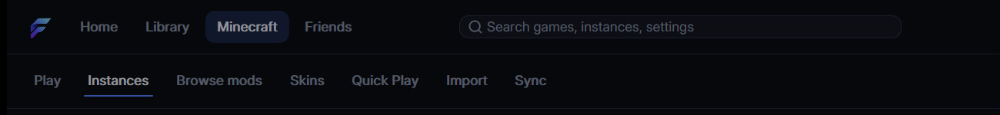
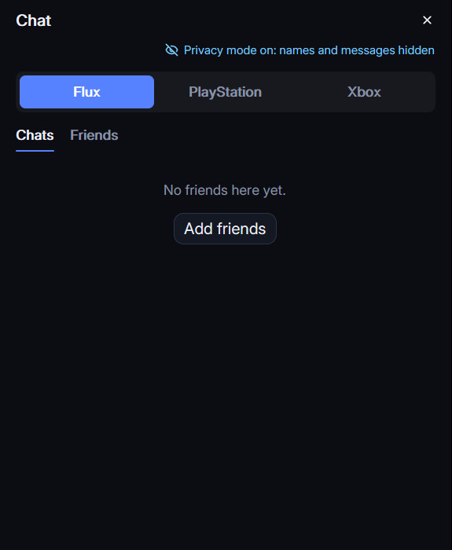

Every game you play, one place
Flux Launcher
Flux is a free Windows launcher that puts your PC games, console emulators and Minecraft in one place, with a Home screen you can drive with a mouse, keyboard or controller.
The button always downloads the newest Flux.exe straight from GitHub. No installer: run it and Flux sets itself up.
From Steam
Try it: click a game, use the arrow keys, or scroll. These are the five most played games on Steam today.
Showcase
What Flux does
A Home screen built for play
Your recent games sit in one row. Pick one and its title, PLAY button, description and details fill the screen, like a console menu.
- Scroll the row with the mouse wheel, the faint bar under it, the arrow keys or a controller.
- Favourites, a Custom row you order yourself, and sorting by recent, name or time played.
- Flux tracks your play time and shows when you last played.
- Pick an accent colour and the PLAY button changes with it.
Bring in every store
Import the games you already own in one go, then browse them as a grid or a list grouped by platform.
- Steam, Epic Games, Xbox app, GOG, Ubisoft Connect, EA app, Battle.net, Amazon Games and Rockstar.
- Add any other game by dropping in its file or folder.
- Search everything from the top bar with Ctrl+K.
- Filters for platform, genre, installed and played.
Console games, set up for you
Flux installs emulators from their official GitHub releases, spots what a disc image is, and launches it with the right one.
- Xbox 360 (Xenia), PlayStation 1, 2 and 3 (DuckStation, PCSX2, RPCS3), PS4 (shadPS4), PSP (PPSSPP) and original Xbox (xemu).
- Point Flux at your own Switch emulator and it launches your Switch games too.
- Game patches, mods and save backups for Xbox 360 and PS3 games.
You bring the games: Flux never downloads or includes any.
A full Minecraft launcher
Every Minecraft section has its own tab: Play, Instances, Browse mods, Skins, Quick Play, Import and Sync.
- Mods, resource packs and shaders from Modrinth and CurseForge.
- Instances: your last played one up front with a big PLAY button, the rest as a grid of picture tiles (your own image or the modpack's) with Play on hover, each with its own logs, mods and settings.
- Quick Play: start any version without setting up an instance, jump back into recent worlds and servers with live player counts and ping, and see which friends are playing.
- Skins with a 3D preview.
- A Max FPS preset that sets up a fast instance for you.

Any controller, everywhere
Use Flux from the couch: every menu works with a controller, and PlayStation pads can act as Xbox controllers in any game.
- DualSense and DualShock 4 over USB or Bluetooth.
- Button mapping, presets, stick swap, invert Y and dead zones.
- A, B, X, Y, the bumpers and triggers all do something on the Home screen.
PlayStation-as-Xbox needs the free ViGEmBus driver. Flux links you to it.
Talk to your friends
Chat without leaving Flux: open Friends from the top bar. Switch between Flux chat, PlayStation and Xbox in one panel.
- Friends lists and messages from PlayStation Network and Xbox.
- Flux chat with friend requests, built on Matrix.
- Privacy mode hides friends' names and turns every message into asterisks, for streaming and screen sharing.

Every game looks right
Flux finds covers, backgrounds and logos for your games by itself, and lets you pick your own.
- Art from Steam, SteamGridDB and other sources online.
- Choose a tile, background, logo or icon for any game, or use your own picture.
- Art you choose stays put when Flux refreshes the rest.
Safe to run
Open, signed, checkable
Open source
All of Flux's code is public on GitHub. Read it, build it yourself, or suggest changes.
Built by GitHub
Each release is built by GitHub Actions from the public code, with a provenance record you can check.
Signed updates
Flux only installs an update when its signature matches, so nobody can swap in a fake one.